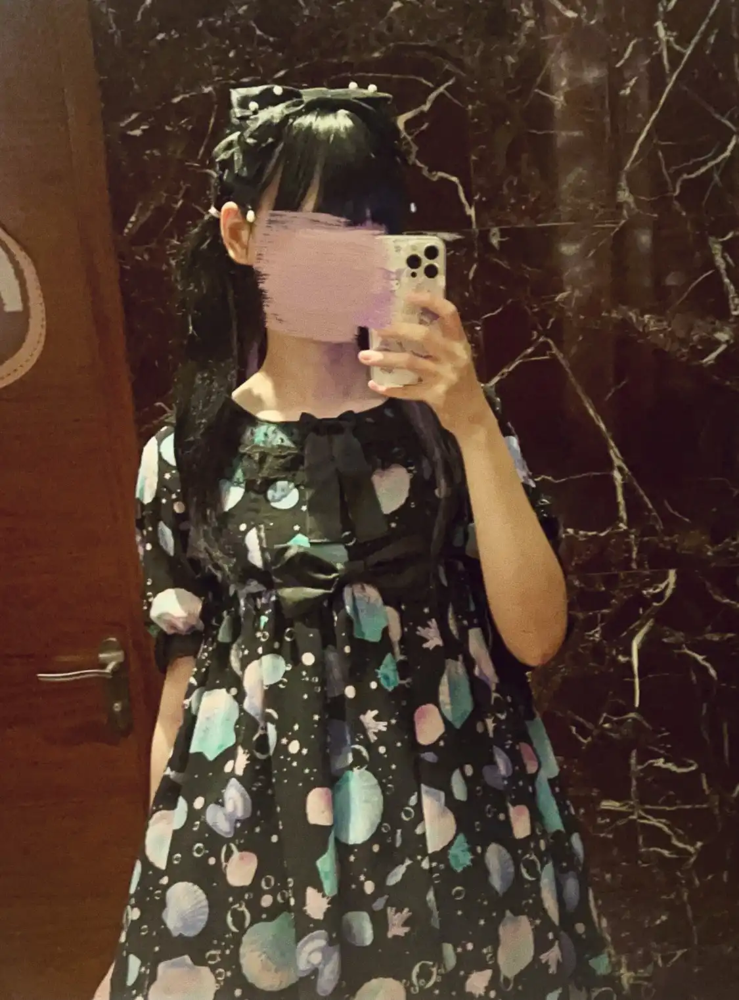

A lalafellin script-kiddie's web journey.
This is a simple homepage created using plain HTML, without any fancy formatting. Many legendary technicians have designed their pages in this straightforward manner, and I chose to follow their "best practices".
I am currently a student pursuing a degree in what is colloquially known as Permanent head Damage. I consider myself a non-qualified script-kiddie and an amateur education researcher specializing in computational approaches (at least, I think so).
An IRL picture of myself is attached to show that my life is (somehow) on the right track. At the very least, unlike my buddies, I do my makeup and wear proper clothes instead of grid sleeves and pajamas,
and here it is:

I will get back later to provide detailed information about my work. For now, this has worked well.
Now, there probably aren’t many people who remember this high school episode, but you, who have found your way here, must be seeking some echoes of the past. If you still yearn for that 2013 when everything wasn’t terribly bleak, feel free to return and take on the challenge once more.
现在应该没有多少人还记得这个高中时代的小插曲了，但能找到这里来的你，我想应该是在寻找一些往日的影子。如果你仍然怀念那个一切都还没有非常糟糕的2013，欢迎随时回来再挑战一下。
Free Bing-Yue / 拯救炳跃 (a 2048 clone)
May life treat every character in this story kindly.
愿生活善待这个故事中的每一个人。
In response to a question that curious souls occasionally stumble upon while skimming my social media:
另外回应一个大家偶尔翻看我的社媒后也许会有点好奇的问题：我大概还是没有跑去变性的。谢谢关心。